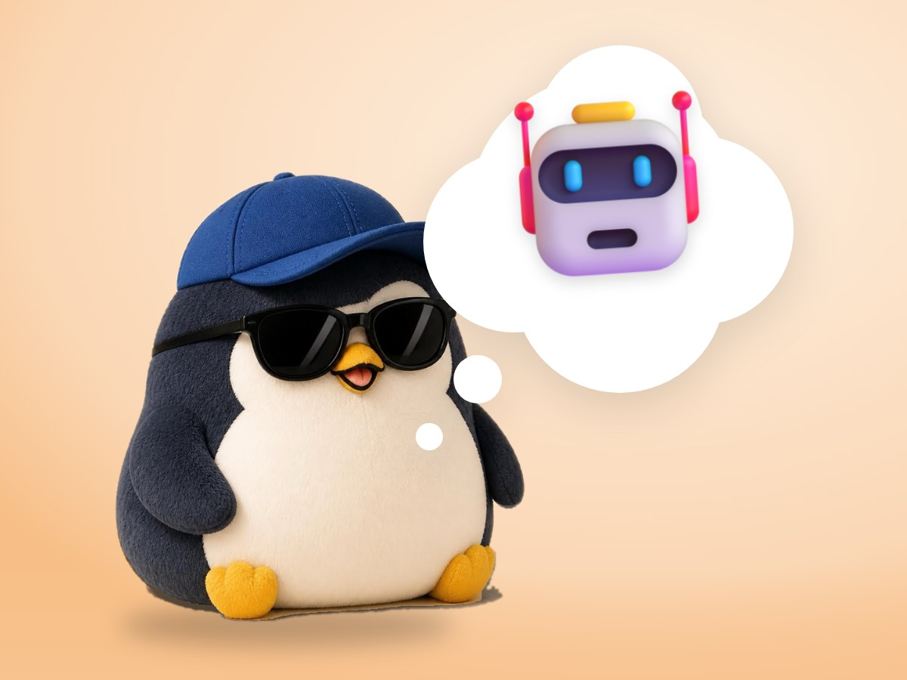

📝 DRAFT · 下書き — まだ本番に出していません · 下書き一覧
🐧 EVERYDAY LIFE⚡ 21 SEC
Noticing "a machine could do this" is a real strength 🤖

Spot Repeats
It is said that just noticing "a machine could do this" when you see a repeated task is a real strength.
For Example
For example, the task of renaming 50 travel photos 1 by 1.
⚡ TRY IT
Machine or me?
Sort each task. Give the boring repeats to the robot.
1/ 6
📸 Rename 50 travel photos
🧾 Add up 40 receipts
🎁 Choose a birthday gift for a friend
💡 Turn on the room light at the same time every morning
🍲 Taste the soup and add a little salt
📅 Write the same plan in 12 months of a calendar
✨ All sorted!
🤖⚡
🤖 Zip! Done in 1 second.
🐧 Yes. This one needs your heart.
🤔 Hmm, look again. Is it the same thing again and again?
⏱ Time saved: 0 min
🐧 With the time you saved, you can slowly enjoy the 🐧 things.
Make It
It is said that the experience of making something yourself from zero is strong, even if it is small.
First Step
First, start by noticing, "This is the same every time."
📚 I wrote this from my notes on books and blogs I have read.